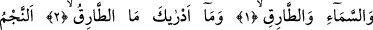
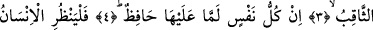
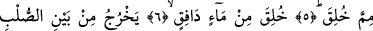
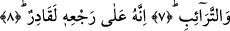

İNSAN NEDEN YARATILDIĞINA
BİR BAKSIN!
Bismillâhirrahmânirrahîm
1. Gökyüzüne ve târıka (sabah yıldızına) yemin ederim.
2. Târıkın ne olduğunu nereden bileceksin?
3. (O, karanlığı) delen yıldızdır.
4. Hiç kimse yoktur ki üzerinde bir koruyucu, bir denetleyici bulunmasın.
5. İnsan neden yaratıldığına bir baksın!
6. Atılan bir sudan yaratıldı.
7. (O su erkeğin) sırtı ile (kadının) göğüs kafesi arasından çıkar.
8. İşte Allah (başlangıçta bu şekilde yarattığı) insanı tekrar yaratmaya da
kadirdir.
Âyette yer alan “târık” kelimesi aslında gece gelip kapıyı çalan kimse demektir.
Mâverdi’nin ifâdesine göre bu kelimenin kökü olan “tark” herhangi bir şeyi dövmek,
ezmek, vurmak demektir. Demirin döğülüp ezildiği alete, kelimenin kökündeki döğme
ve vurma anlamından dolayı “mıtraka” denmiştir. Yine aynı kökten, insanların gelip
geçtikleri ve ayaklarını vurdukları yola “tarîk” denmiştir. Geceleyin yürüyen kimseye
“târık” derler. Böyle bir kimseye bu ismin verilmesi genelde kapı çalmaya ihtiyaç
duyacağından dolayıdır. Çünkü geceleri evlerin kapısı kapalı olur.
Târık kelimesi ilkin yukarda işâret ettiğimiz anlamlara kullanılırken daha sonra kim
olursa olsun geceleyin ortaya çıkan herşey anlamına kullanılmaya başlanmış, sonra
kapsam daha da genişletilerek geceleyin ortaya çıkan hayali sûretlere târık denmeye
başlanmıştır. Bu sûrede “târık” kelimesiyle kasdedilen ise geceleyin görülen yıldızdır.
Rağıb Isfahânî’nin ifâdesine göre yıldız kelimesinin “ târık” kelimesiyle ifâde
edilmesi yıldızların geceleri ortaya çıkmış olmalarından dolayıdır. Nitekim Hind binti
Utbe Uhud günü bu kelimeyi kullanarak: “Bizler târıkın kızlarıyız, bizler serilmiş